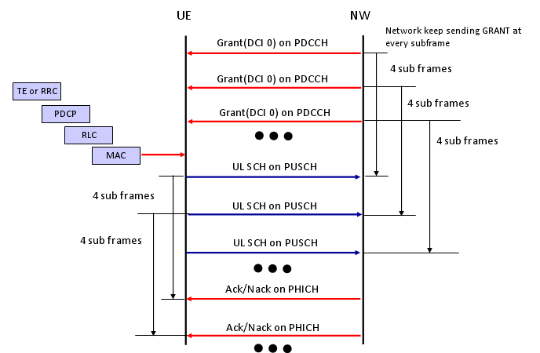

|
LTE Basic Procedure Go Back To Index Home : www.sharetechnote.com |
|
|
Uplink Data Transmission Scheduling - Persistent Scheduling
There are a couple of Data Transmission Scheduling Scheme in LTE. The most simple in terms of algorithm would be the persisent scheduling. In this scheduling mode, Network send 'Grant' in DCI Format 0 for every subframe.
i) Network send the first data on DL PDSCH and PDCCH which has DCI format 1 for DL Data Decoding and DCI format 0 for UL Grant. (If there is no downlink data to be transmitted, network transmits only DPCCH with DCI format 0 without any DPSCH data) ii) UE decode PCFICH to figure CFI value. iii) UE decode PDCCH and get the information on DCI format 1 iv) Based on DCI format 1, UE decode DL data. v) UE decode the information on DCI format 0 from PDCCH vi) UE send ACK/NAK for DL data through UCI (UCI will be carried by PUCCH) vii) UE check the Grant field. viii) If Grant is allowed, UE transmit the uplink data through PUSCH ix) Network decode PUSCH data and send ACK/NACK via PHICH x) UE decode PHICH and retransmit the data if PHICH carries NACK
Overall flow can be illustrated as follows. This diagram would not show all the details but give you the big picture for the procedure. 
For detailed data structure of DCI Format 0, refer to TS 36.212 section "5.3.3.1.1 Format 0"
The process listed above is in reality a pretty complicated process and need a lot of troubleshoot and debugging. So in case of development and testing phase, we normally break down this process into multiple simple/small procedure and verifies it step by step.
Step 1 : DL data reception and no ACK/NACK transmission ==
a) Network send PDCCH and PDSCH data b) See if UE properly decode PDSCH data This would seem to be very simple two step process, but to make this happen UE is capable of doing step ii), iii), iv) described above.
Step 2 : DCI format 0 reception ==
a) Network send DCI Format 0(UL Grant) without PDSCH transmission b) See if UE properly decode DCI Format 0 (You need to make it sure that Resource allocation that UE decoded matches with DCI format 0 sent by network.)
Step 3 : PUSCH transmission based on DCI format 0 ==
a) Network send DCI Format 0(UL Grant) without PDSCH transmission b) UE transmit UL Data on PUSCH c) Network decode PUSCH data d) see if the data decoded at Network side maches what UE transmit To make this happen, UL DMRS for PUSCH should have been properly implemented and you have to make it sure that UE transmit the PUSCH data on the RBs that DCI format 0 specified.
Step 4 : DL data reception and ACK/NACK transmission ==
a) Network send PDCCH and PDSCH data b) UE decode PDSCH data c) UE has to transmit ACK/NACK accordingly
Step 5 : UL data transmission and ACK/NACK reception ==
a) Network send DCI Format 0(UL Grant) without PDSCH transmission b) UE transmit UL Data on PUSCH c) Network decode PUSCH data d) Network send ACK/NACK on PHICH e) UE has to decode ACK/NACK properly f) UE has to retransmit the data if it gets NACK
|